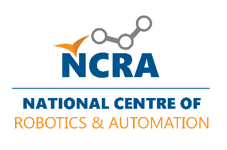

Bachelor of Mechatronics Engineering
2019 - 2023
National University of Sciences and Technology, Pakistan
- Major Coursework: Mechatronics and Robotics
- Minor Coursework: Machine Learning, Databases, Automotive Manufacturing Systems
- Thesis (Capstone Project): Assistive Feeding System - A robotic system to help individuals with eating
- Master's Courses (Audit): Artificial Neural Networks, Advance Embedded System and Biomedical Instrumentation
- GPA: 3.66/4.00
Rector's Gold Medal: Awarded for best capstone project in Department of Mechatronics Engineering
2x Distinguished Student Awards: Received for securing SGPA > 3.5 in 4 consecutive semesters
Pre-Engineering (Intermediate)
2017 - 2019
Government College University, Lahore
- External Grade: A+ Internal Grade: A
- Class representative junior and senior year
- Member of Robotics Club and Debate Society
- Developed autonomous navigation algorithms for mobile robots using ROS and SLAM
- Implemented computer vision systems for object recognition and manipulation
- Collaborated on 2 published research papers in robotics conferences
Team Lead, Industrial Automation
Sep 2024 - Oct 2024
Cowlar Design Studio
- Developed autonomous navigation algorithms for mobile robots using ROS and SLAM
- Implemented computer vision systems for object recognition and manipulation
- Collaborated on 2 published research papers in robotics conferences
- Mentored junior students on robotics projects
Houston Award: Awarded for exceptional leadership and performance in industrial autoamtion sector
Embedded Design Engineer
Jun 2023 - Aug 2024
Cowlar Design Studio
- Developed autonomous navigation algorithms for mobile robots using ROS and SLAM
- Implemented computer vision systems for object recognition and manipulation
- Collaborated on 2 published research papers in robotics conferences
- Mentored junior students on robotics projects
Trailblazer: Honored with Trailblazer title after first self-presentation on annual design retreat
- Designed PLC programs for industrial automation systems
- Assisted in troubleshooting and maintenance of robotic assembly lines
- Created documentation for equipment operation and safety procedures

Research and Development Intern
Summer 2021
National Centre of Robotics and Automation
- Designed PLC programs for industrial automation systems
- Assisted in troubleshooting and maintenance of robotic assembly lines
- Created documentation for equipment operation and safety procedures